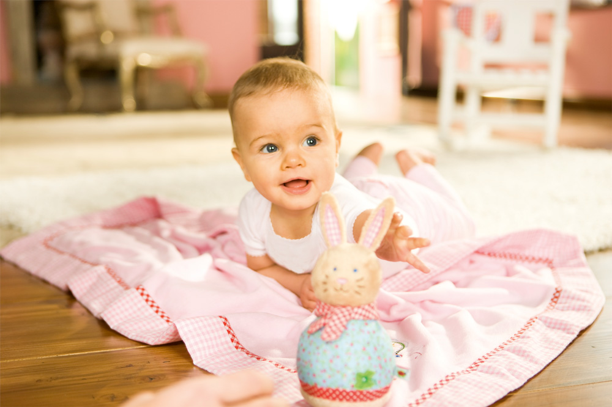

Пятимесячный малыш готовится к ползанию - крутится вокруг пупка, перекатывается. Может интересоваться едой взрослых. Часто на подходе первый зуб.
В возрасте 5 месяцев ребенок хорошо узнает близких ему людей, по-разному реагирует на неодинаковый тон обращения к нему. Что умеет ребенок в 5 месяцев? Пытается двигаться из положения лежа на животе, вертеться вокруг пупка, перебирая ногами, перекатываться; ползти по-пластунски на руках, не отрывая живота от пола. 5-месячный малыш может сидеть с поддержкой, например, в детском стульчике, или стоять на выпрямленных ногах, если его поддерживать под мышки. Ребенок в возрасте 5 месяцев долго удерживает в руке мелкие игрушки. На этот возраст приходится начало интереса к еде взрослых: ребенок может хватать куски с тарелки, "провожать взглядом" то, что взрослый отправляет себе в рот. В 5 месяцев часто на подходе первый зуб.